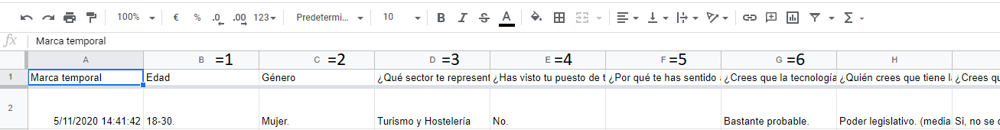
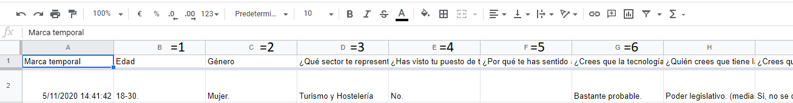

RESULTADO
PASOS
1. Descargar el html y seleccionarlo:
1.1:
1.2:
1.3: guarda el archivo seleccionado en cualquier carpeta de tu ordenador, ya sea arrastrándolo o extrayéndolo:

1.4: ya de vuelta en la página principal, pulsa en "seleccionar archivo", selecciona lo que has guardado en tu ordenador y pulsa cargar.
2. Selecciona la agrupación:
2.1: Vuelve al excel para saber sobre qué columnas agrupar e introdúcelas en la página, poniendo los números separados por comas sin espacios --> 1,2,3 (ver la imagen justo abajo para saber que números poner)
Esto sirve para ver qué han contestado según edad, género o para ver qué han contestado a una pregunta según lo que han contestado a otra.
En el ejemplo, si quisiera agrupar en edad y sector pondría 1,3.

Esto sirve para ver qué han contestado según edad, género o para ver qué han contestado a una pregunta según lo que han contestado a otra.
En el ejemplo, si quisiera agrupar en edad y sector pondría 1,3.

2.2: Volver a la página, introducir las columnas y pulsar en "agrupar"
3. Selecciona columna a estudiar:
3.1: En este caso solo debes seleccionar una columna sin poner comas, solo el número que corresponda a la pregunta que quieres estudiar.
Si la pregunta era tipo "casillas" o "cuadrícula de casillas" cambia el tipo de pregunta a estudiar a "posibilidad de multirrespuesta"
Si quieres cambiar la pregunta a estudiar solo cambia el último número introducido y dale a "ver estadísticas" para no tener que hacerlo de nuevo al completo.
Si la pregunta era tipo "casillas" o "cuadrícula de casillas" cambia el tipo de pregunta a estudiar a "posibilidad de multirrespuesta"
Si quieres cambiar la pregunta a estudiar solo cambia el último número introducido y dale a "ver estadísticas" para no tener que hacerlo de nuevo al completo.
3.2: Quedaría como en la imagen. Tras esto le das a ver estadísticas y ya lo obtienes, no es necesario pulsar en la rueda para los ajustes, lo que hace se puede ver en extras.